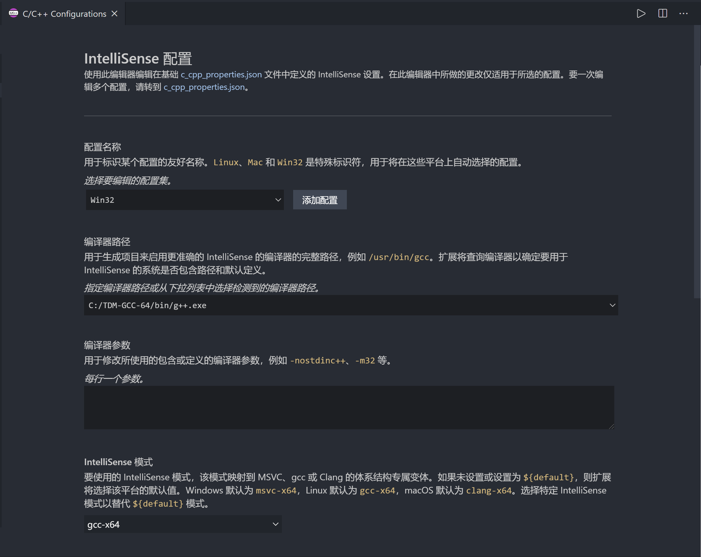
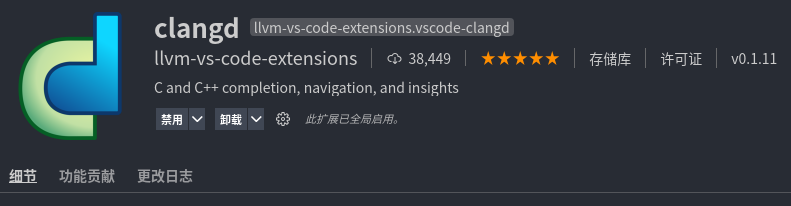
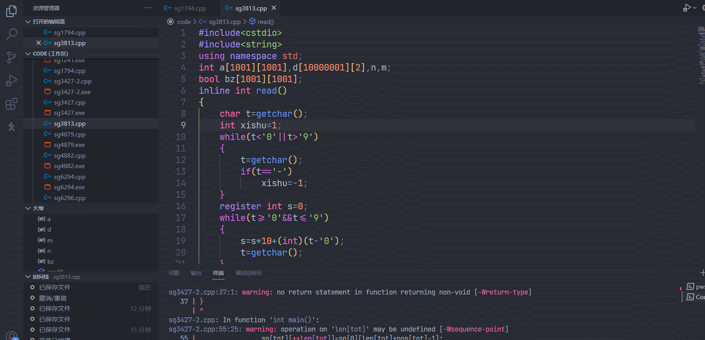

VS Code
简介
Visual Studio Code（以下简称 VS Code）是一个由微软开发，同时支持 Windows、Linux 和 macOS 等操作系统且开放源代码的代码编辑器。它是用 TypeScript 编写的，并且采用 Electron 架构。它带有对 JavaScript、TypeScript 和 Node.js 的内置支持，并为其他语言（如 C、C++、Java、Python、PHP、Go）提供了丰富的扩展生态系统。
官网：Visual Studio Code - Code Editing. Redefined
使用 Code Runner 扩展运行代码
VS Code 安装并配置扩展后可实现对 C/C++ 的支持，但配置过程比较复杂。一个简单的编译与运行 C++ 程序的方案是安装 Code Runner 扩展。
Code Runner 是一个可以一键运行代码的扩展，在工程上一般用来验证代码片段，支持 Node.js、Python、C、C++、Java、PHP、Perl、Ruby、Go 等 40 多种语言。
安装的方式是在扩展商店搜索 Code Runner 并点击 Install；或者前往 Marketplace 并点击 Install，浏览器会自动打开 VS Code 并进行安装。

安装完成后，打开需要运行的文件，点击右上角的小三角图标即可运行代码；按下快捷键Ctrl+Alt+N（在 macOS 下是Control+Option+N）也可以得到同样的效果。
Warning
如果安装了 VS Code 与 Code Runner 后，代码仍然无法运行，很有可能是因为系统尚未安装 C/C++ 的运行环境，参考 Hello, World! 页面 以安装。
记得勾选设置中的 Run In Terminal 选项，如图：
使用 C/C++ 扩展编译并调试/智能补全代码
安装扩展
在 VS Code 中打开扩展商店，在搜索栏中输入 C++ 或者 @category:"programming languages"，然后找到 C/C++，点击 Install 安装扩展。

Warning
在配置前，请确保系统已经安装了 G++ 或 Clang，并已添加到了 PATH 中。请使用 CMD 或者 PowerShell，而不是 Git Bash 作为集成终端。
配置 GDB/LLDB 调试器
GDB
在 VS Code 中新建一份 C++ 代码文件，按照 C++ 语法写入一些内容（如 int main(){}），保存并按下F5，进入调试模式。
如果出现了「选择调试器」的提示，选择 C++ (GDB/LLDB)。在「选择配置」中，G++ 用户选择 g++.exe - 生成和调试活动文件；Clang 用户选择 clang++ - 生成和调试活动文件。
Warning
配置名称并非固定，而是可以自定义的。不同的操作系统可能具有不同的配置名称。
完成后，VS Code 将自动完成初始化操作在下方的集成终端中启动调试。至此，GDB 所有的配置流程已经完毕。
LLDB
如果需要采用 LLDB，需要安装另外一款扩展1——CodeLLDB。从该项目的 Release 页面下载 .vsix 文件后2，从 VS Code 的扩展页面安装。

先按照上文 GDB 的配置过程操作一遍，然后删除 .vscode/launch.json，按下F5，选择 LLDB，再把 launch.json 中的 ${workspaceFolder}/<executable file> 更改为 ${fileDirname}/${fileBasenameNoExtension} 即可。
至此，LLDB 配置完成。再次按下F5即可看到软件下方的调试信息。
若要在以后使用 VS Code 编译并调试代码，所有的源代码都需要保存至这个文件夹内。若要编译并调试其他文件夹中存放的代码，需要重新执行上述步骤（或将旧文件夹内的 .vscode 子文件夹复制到新文件夹内）。
开始调试代码
使用 VS Code 打开一份代码，将鼠标悬停在行数左侧的空白区域，并单击出现的红点即可为该行代码设置断点。再次单击可取消设置断点。

按下F5进入调试模式，编辑器上方会出现一个调试工具栏，四个蓝色按钮从左至右分别代表 GDB 中的 continue,next,step 和 until：

如果编辑器未自动跳转，点击左侧工具栏中的「调试」图标进入调试窗口，即可在左侧看到变量的值。
在「监视」中，你可以输入表达式，在每一次进行 next 或 step 等操作时都会重新求值并显示。
在「调用堆栈」中，你可以看见当前函数执行的栈帧。
Tip
你可以参照 GDB 官方文档 来查看某个数组一段区间内的内容。
在调试模式中，编辑器将以黄色底色显示下一步将要执行的代码。
配置 IntelliSense
用于调整 VS Code 的智能补全。
如果你使用 Clang 编译器，在「IntelliSense 模式」中选择 clang-x64 而非默认的 msvc-x64；如果你使用 G++ 编译器，选择 gcc-x64 以使用自动补全等功能。否则会得到「IntelliSense 模式 msvc-x64 与编译器路径不兼容。」的错误。

配置 clangd
Warning
由于功能冲突，安装 clangd 扩展后 C/C++ 扩展的 IntelliSense 功能将被禁用（调试等功能仍然使用 C/C++ 扩展）。如果 clangd 扩展的功能出现问题，可以查看是否禁用了 C/C++ 扩展的 IntelliSense 功能。
clangd 简介
LLVM 官网上对 clangd 的介绍是这样的：
Clangd is an implementation of the Language Server Protocol leveraging Clang. Clangd’s goal is to provide language "smartness" features like code completion, find references, etc. for clients such as C/C++ Editors.
简单来说，clangd 是 Clang 对语言服务器协定（Language Server Protocol）的实现，提供了一些智能的特性，例如全项目索引、代码跳转、变量重命名、更快的代码补全、提示信息、格式化代码等，并且能利用 LSP 与 Vim、Emacs、VSCode 等编辑器协作。虽然官方给出的定义是 LSP 的实现，但 clangd 的功能更接近语言服务器（Language Server）而不仅仅只是协议本身。
VS Code 的 C/C++ 扩展也有自动补全等功能，但在提示信息的易读程度的准确度等方面与 clangd 相比稍逊一筹，所以我们有时会使用 clangd 代替 C/C++ 扩展来实现代码自动补全等功能。
安装
参见 Getting started。
VS Code 扩展
打开 VS Code 扩展商店，在搜索栏中输入 clangd 找到 clangd 扩展并安装

如果下方弹出 clangd 要求关闭 Intellisense 的对话框，点击 "Disable Intellisense"，重新加载工作区，就可以享受 clangd 的自动补全等功能了。
编辑
语法设置
在新打开的编辑器中点击「选择语言」，即可打开对应的语法高亮，如图：
快捷键
部分快捷键：
| 按键 | 操作 |
|---|---|
| Ctrl+C/X | 复制/剪切当前行（当没有选择内容时） |
| Ctrl+Shift+K | 删除当前行 |
| Alt+Up/Down | 行上移/下移 |
| Alt+Shift+Up/Down | 行向上/向下复制 |
| Ctrl+/ | 切换行注释 |
| Ctrl+[/] | 行向左/右缩进 |
| Ctrl+Shift+[/] | 行折叠/展开 |
| Ctrl+P | 打开最近打开的文件 |
| Alt+Z | 切换自动折行 |
| Alt+F12 | 速览定义（如函数的定义） |
| Ctrl+Shift+\ | 跳转到匹配括号 |
| Ctrl+T | 在工作区中查找符号（在文件夹中查找指定名称函数等） |
多光标
按住Alt并单击即可在编辑器中添加光标，多数编辑操作都可同时进行；按住鼠标中键并在编辑器中移动也可添加多行光标，如图：

按Ctrl+F2可在编辑器中同时更改所有匹配项，如图：

注意此时在右上角会有一个工具栏，可在其中开启查找匹配项时是否开启大小写匹配、全字匹配等。